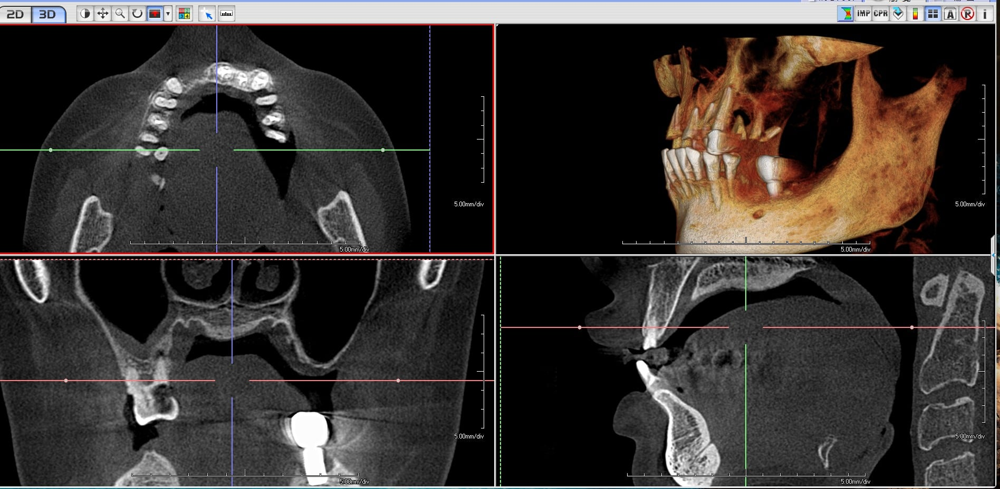
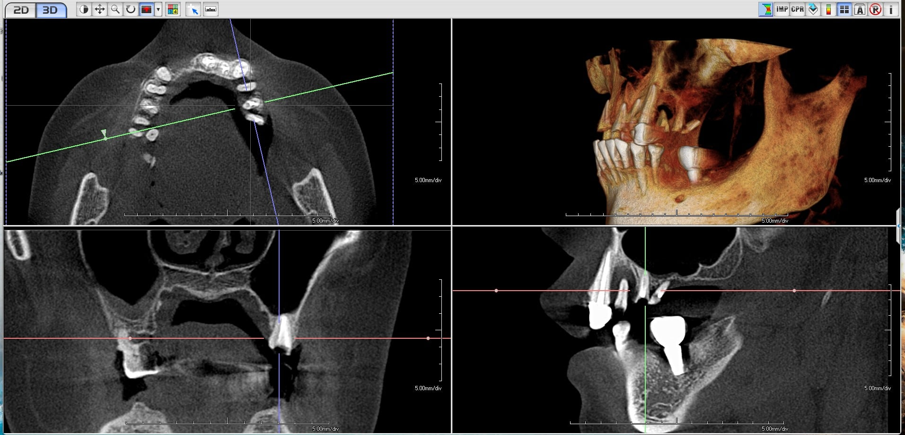
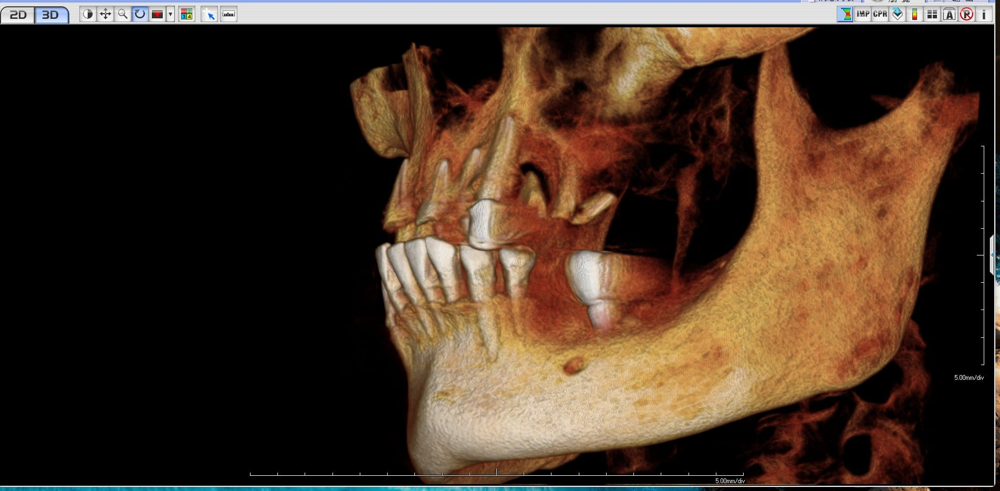
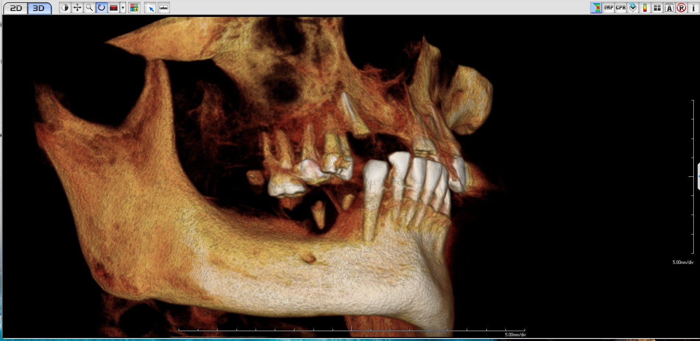
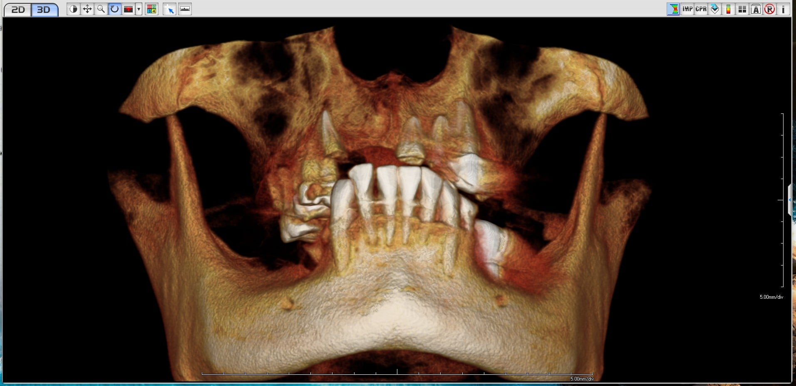
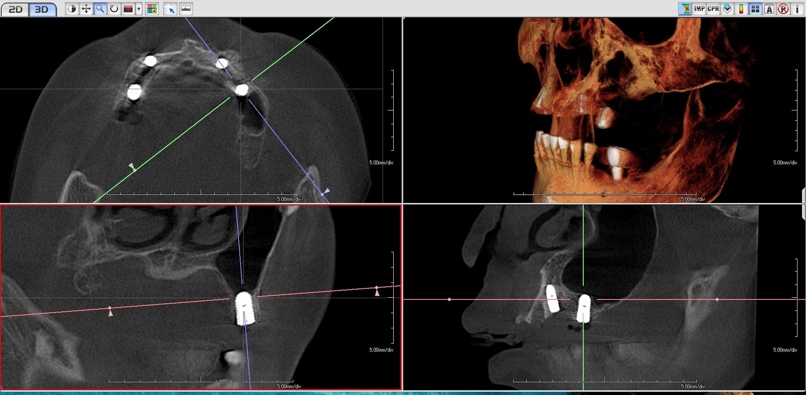
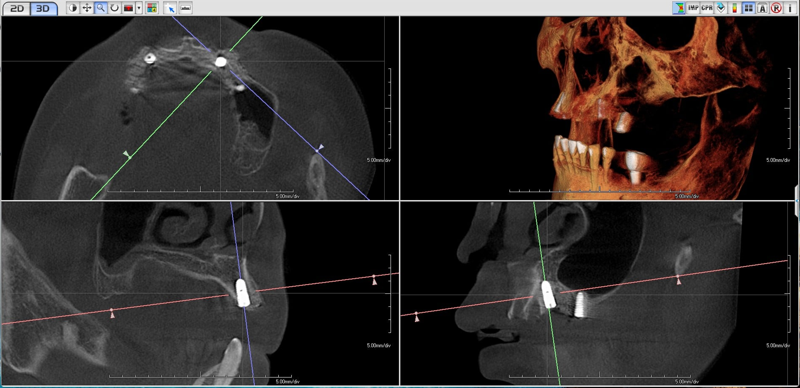
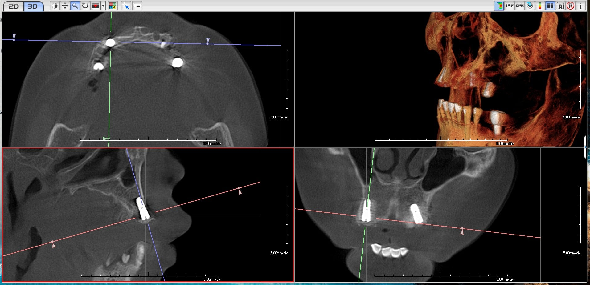
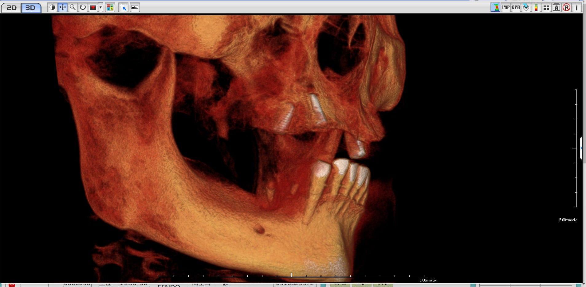

突破極限骨條件的精準植牙解決方案
患者因上顎無齒顎合併嚴重骨缺損問題，先前曾於多家醫療院所評估，均被診斷為「上顎骨量嚴重不足、解剖條件受限」，判定無法進行傳統 All-on-4 或一般的植牙治療。經轉介至本院尋求專業第二評估意見。
左側後牙區（#24、#26）骨缺損範圍極大，幾乎無可用齒槽骨，傳統植牙幾乎不可能。
上顎竇底距離牙槽頂過近，常規植入深度受限，必須合併鼻竇增高術。
前牙及右側區齒槽脊寬度與高度均不足，需特殊角度規劃克服。
透過高階電腦斷層掃描（CBCT），進行三維立體分析，精確評估骨質、骨量與解剖結構關係：



僅 #25 殘根周邊具備局部植牙條件，其餘區域骨缺損嚴重。必須採用All-on-4策略——利用特殊角度規劃，以少數植體支撐全顎假牙。
為突破骨量不足之困境，本院擬定以下精密手術方案：
針對 #24 嚴重骨缺損與 #26 無骨狀況，利用 #25 殘根處進行上顎竇內升術（Internal Sinus Lift）。頂部精準填補骨粉後，植入規格 5.0×10 mm 之大尺寸植體，初期穩定度扭力達 35+ N-cm。
內部鼻竇增高手術 大尺寸植體刻意將 #15 位置以傾斜角度植入，藉此避開上顎竇底解剖構造，最大化爭取可利用之骨質條件與支撐跨距。這是 All-on-4 經典策略關鍵。
傾斜植體技術 解剖迴避採用即拔即種術式，同步填補骨粉（Bone Graft）並置入再生膜（Barrier Membrane），優化牙脊外型與骨整合環境，確保長期穩定性。
即拔即種 GBR 引導骨再生
#15（傾斜）→ #13（前牙）→ #23（前牙）→ #25（後牙/內升）
四顆策略性分布的植體，避開解剖危險區，最大化利用可用骨質，為全口重建奠定堅實基礎。
術中即時 CBCT 確認與術後即拍影像，記錄精準治療過程：






經術後電腦斷層掃描確認：
本案成功關鍵在於整合多項先進技術，於極限條件下完成看似不可能的任務：
避開解剖限制區，利用後方可用骨質，最大化支撐跨距。
僅剩的後牙骨區透過內升術擴充，避免複雜側開窗手術。
縮短治療週期，同步優化前牙區骨整合環境。
術前精確規劃、術中即時確認，確保最佳植入位置。
如果您符合以下情況，All-on-4 全口重建可能是您的理想選擇：
每一位患者的情況都是獨特的。即使您曾被判定「無法植牙」，歡迎蒞臨科技渥爾進行專業評估。先進的 3D 影像技術與多年全口重建經驗，我們樂於為您尋找可能。
科技渥爾牙醫診所
預約專線：(06) 123-4567（範例）
地址：台南市東區範例路 123 號